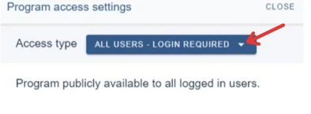
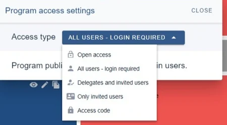
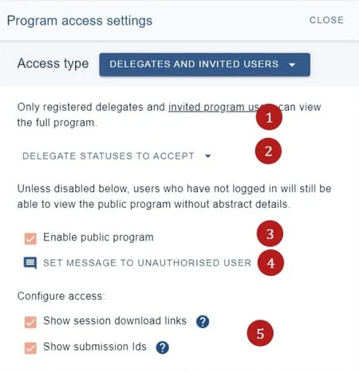
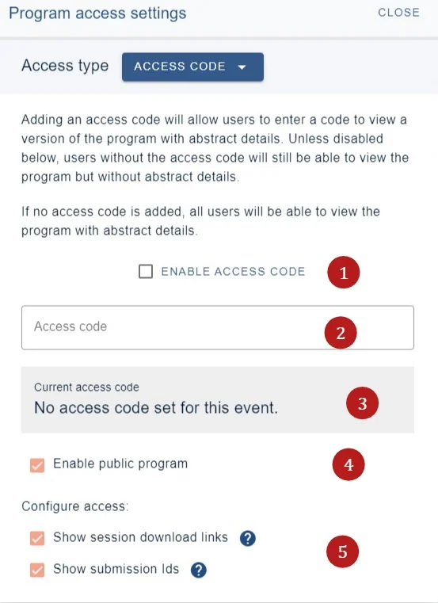
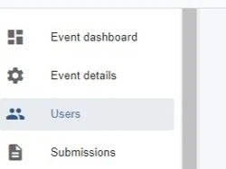
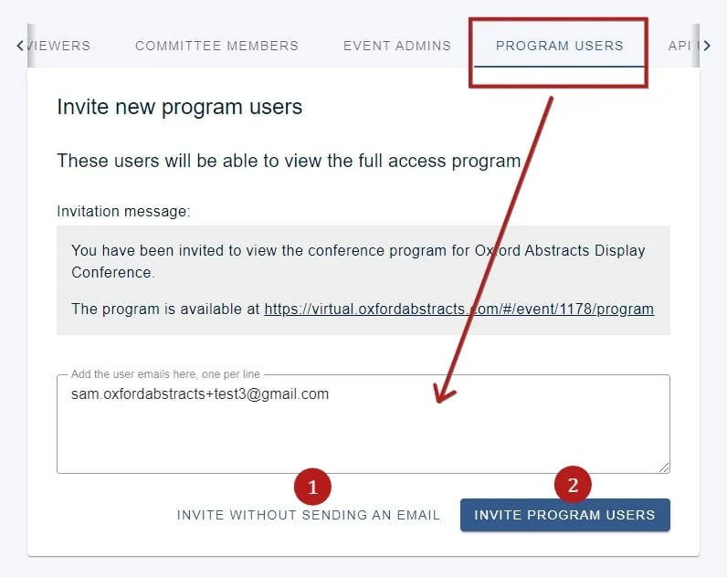
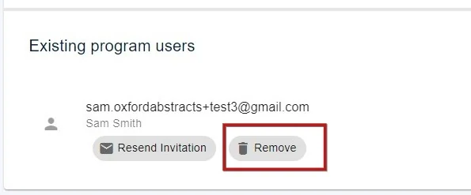

Controlling access to the programme
There are several access options that will allow you to choose who can view program content. This feature is only available in the Professional Conference package.#
The guidance below is for event administrators/ organisers. If you are an end user (eg. submitter, reviewer, delegate etc), please click here.
NB: It is advised that you read Publishing your program first for information on the difference between the public and full access program.
Go to Event dashboard → Conference → Program → Builder ➞ Settings ➞Advanced Features ➞ Set Access
The access panel will appear. Click on the down arrow to choose the access you require.

The choices are as below

Open access - enables public access (anyone can view)
All users - login required -anyone with an Oxford Abstracts account can view.
Delegates and invited users -only delegates and those added to the invited users can view
1) See below for adding invited users.
2) Click on the arrow to check which delegate statuses you would like to be able to view the program.
3) Allow the public program to be viewed as well as the full access program.(see Publishing your program)
4) Set a message to be shown to unauthorised users.
5) Check if you would like any of these to be available to the option you have chosen.

NB: Delegates are pulled from the Delegate Registration module.
Only invited users - (as above)
Access code - can only be accessed by entering a code of at least 6 digits. If you choose this option, the below will appear.

1) Enable access code
2) Enter your access code
3) Your access code status
4) Enable public program (see Publishing your program)
5) and 6) Check if you would like any of these to be available to the option you have chosen.
Adding invited users
To add invited users, click onUsersin your event dashboard

Choose the program users tab and enter the invited user's emails with a line break between each. You can then choose 1) to just add them to the system or 2) add them to the system and send them an invite to their registered email address.

You can add or delete any invited users whenever you require, by scrolling down to the Existing program users section and clicking remove next to the relevant email address.


Did this page solve it?
Thanks — this helps us fix it.
Didn't solve it? Ask our support team
No question is too small, and there's no charge for asking. Raise a ticket and someone who knows the software will pick it up.